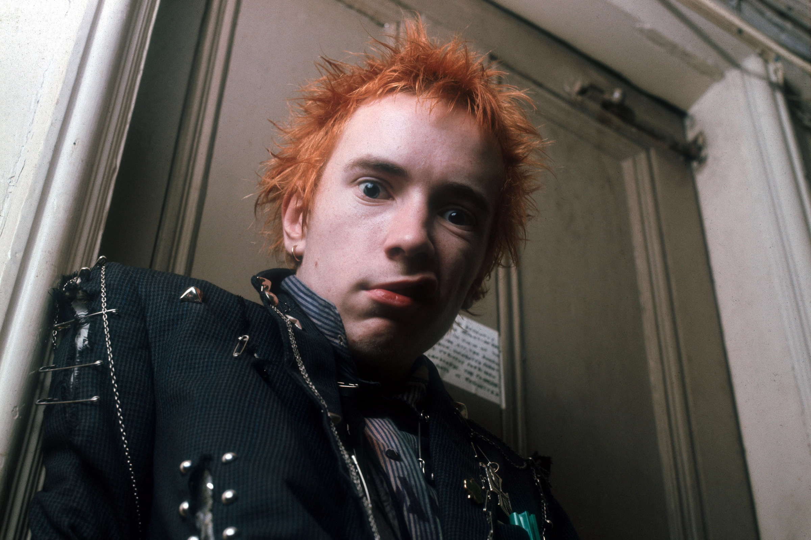

La historia del rock and roll está plagada de mitos, leyendas, datos curiosos, secretos y rumores que han desatado la imaginación y la especulación en la mente de millones de melómanos de todo el mundo a lo largo de varias generaciones. Prosiguiendo con el artículo anterior, a continuación les presentamos algunos mitos y datos curiosos más famosos de la historia del rock (II):
1)John Lydon, vocalista de la legendaria banda punk británica Sex Pistols, se integró al grupo casi por casualidad. En agosto de 1975 Bernard Rhodes, futuro manager de The Clash, se fijó en él cuando Lydon, que por entonces tenía 19 años y era un habitual del sector londinense de Kings Road, llevaba puesta una camiseta del grupo Pink Floyd sobre la cual había escrito a mano las palabras “I hate” (de modo que la polera decía “Odio a Pink Floyd”) y perforada donde estaban los ojos de los miembros de la banda. El guitarrista de los Sex Pistols, Steve Jones, quien rebautizaría a Lydon como “Johnny Rotten” (“Juanito Podrido”), aparentemente debido a su mala higiene bucal, relató que “cuando lo conocimos vino con el pelo verde. Pensé que tenía una cara realmente interesante. Me gustó su aspecto. Y llevaba puesta su camiseta ‘I Hate Pink Floyd’ sujeta con imperdibles. John tenía algo especial, pero cuando comenzó a hablar resultó ser un auténtico pelmazo, aunque bastante listo”.
 2) Hay escenas icónicas de la historia del rock que han quedado grabadas en el inconsciente colectivo: Elvis Presley bailando al ritmo de la provocadora canción “Jailhouse rock”; Chuck Berry haciendo su famoso “duck walk” mientras tocaba su guitarra; y el guitarrista y líder de The Who, Pete Townshend, moviendo su brazo derecho como las aspas de un molino mientras rasgaba su guitarra eléctrica. Según relataría el mismo Pete Townsend, “El Molino” nació gracias a los Rolling Stones, cuando en los inicios de The Who Pete fue invitado al camerino de los Stones antes de un concierto en Inglaterra. Townshend era fanático de Keith Richards, guitarrista de los Stones, y en esa oportunidad analizó cada uno de sus movimientos, llamándole la atención cuando Richards, a manera de estiramiento, comenzó a mover su brazo derecho en círculo y continuó haciéndolo cuando se abrió el telón, incluso tocando un par de notas de esa manera. El líder de The Who salió extasiado de ese show y decidió añadir ese movimiento a su perfomance sobre los escenarios. Un año más tarde volvió a encontrarse con Keith Richards y le preguntó: “¿No tienes problema de que esté usando uno de tus movimientos?”, aunque Richards no entendía a que se refería, pues en su cabeza jamás había hecho ese movimiento.3) El mismo guitarrista Pete Townsend fue el primer músico conocido por destruir instrumentos durante los conciertos, a menudo lanzando los fragmentos rotos de su guitarra contra los amplificadores. La primera vez que Townsend rompió una guitarra tuvo lugar en 1968, en un local llamado Railway Tavern de Harrow, cuando accidentalmente estrelló la guitarra contra el techo, desatando el delirio del público. A contar de ese momento, la destrucción de instrumentos se convirtió en una parte habitual de los conciertos de The Who, en los que el baterista Keith Moon también solía destrozar su batería introduciendo pirotecnia en su bombo. Townshend, por otra parte, relacionó su actitud con las teorías del artista Gustav Metzger sobre el arte autodestructivo, que había estudiado en la Escuela de Arte de Londres, si bien en otra ocasión admitió que era un simple truco para dar personalidad al grupo y darle la publicidad que necesitaban para ser conocidos. 4) Prosiguiendo con el mismo Pete Townsend, cuando el legendario guitarrista Jimi Hendrix comenzó a romper sus guitarras en el escenario, Townsend se mostró enfadado porque creyó que el genial instrumentista negro se había apropiado de una performance que había sido patentada por él. Así que para no darle la menor oportunidad a Jimi Hendrix para que lo siguiera imitando, Townsend consiguió que The Who tocara antes que él en el festival de Monterrey en 1967. En esa ocasión, Townsend destrozó su guitarra contra un amplificador y después de su actuación, se quedó detrás del escenario esperando la actuación de Hendrix, mientras le decía: “¿Quiero ver lo que vas a hacer ahora?”. Sin embargo, Jimi Hendrix opacaría totalmente al grupo inglés, pues no sólo tocó su guitarra con los dientes, sino que también le prendió fuego, en una especie de ritual musical de fuego sobre el escenario. Cuando Keith Moon, baterista de The Who, vio aquello, le espetó a Townsend: “Serás idiota ¿Porqué no pensaste en hacer eso tú antes?”. De todos modos, en el Festival de Woodstock en 1969, The Who se desquitaría de la afrenta cometiendo el peor destrozo que un grupo musical había conocido hasta entonces, destruyendo guitarras, baterías, pedestales de micrófonos y amplificadores. 5) “Berlin”, el tercer álbum solista del músico Lou Reed, producido por Bob Ezrin y lanzado en 1973, recibió en su tiempo críticas y reseñas muy duras, debido a su temática obscura y sobrecargada. La influyente revista Rolling Stone, por ejemplo, lo catalogó como “un desastre que lleva al oyente a través de un submundo de esquizofrenia, paranoia, degradación, violencia anfetamínica y suicidio”, asegurando que el disco seguramente sería el fin de la “otrora prometedora” carrera de Lou Reed. Según confesaría el mismo Lou Reed, “nos matamos psicológicamente en ese álbum. Nos metimos tan a fondo que luego casi no podíamos salir. Fue un álbum muy doloroso de realizar. Y sólo yo y Bobby (Ezrin) sabíamos lo que teníamos entre manos, y lo que el material consiguió hacer con nosotros”. Se dice que Bob Ezrin, productor del disco, consiguió los chillidos de niños angustiados que se escuchan en el tema “The Kids” diciéndole a sus propios hijos que su madre había muerto y, posteriormente, grabándolos. 6) Antes de ser conocida como Pearl Jam, la famosa banda norteamericana liderada por el vocalista Eddie Vedder se hacía llamar Mookie Blaylock en honor a un jugador de baloncesto de la NBA, aunque cuando el grupo firmó con el sello Epic Records necesitó un cambio de nombre, bautizándose como Pearl Jam, el supuesto nombre de una jalea de peyote que hacia la abuela del mismo Eddie Vedder. Si bien Vedder reiteró en varias oportunidades que el nombre de la banda hacía referencia a su bisabuela (Pearl) y a una mermelada (Jam) alucinógena que ésta preparaba, otros afirman que la palabra “Pearl” hacía referencia a su significado real (Perla), mientras que la palabra “Jam” se incorporó luego que los miembros del grupo vieran una actuación de Neil Young en 1991, donde el músico canadiense hizo largas improvisaciones (Jam) que duraban entre 15 a 20 minutos.
 8) La portada del disco “London Calling”, lanzado en diciembre de 1979 por la banda británica de The Clash y que muestra al bajista Paul Simonon estrellando con violencia su bajo contra el suelo de un escenario, es considerada una de las carátulas más icónicas y famosas de la historia del rock. Diseñada por Ray Lowry, la portada se basó en su diseño de letras rosas y verdes en la portada del primer álbum de Elvis Presley lanzado en 1956 y utilizó una fotografía tomada por la fotógrafa Pennie Smith, quien fotografió a The Clash durante una actuación que la banda británica brindó el 21 de septiembre de 1979 en el Palladium de Nueva York. Smith, en todo caso, hasta el último momento se negó a utilizar la foto, ya que ésta se encontraba parcialmente desenfocada. Según relataría posteriormente el bajista Paul Simonon, “el concierto estaba yendo bien, pero no para mí, así que me desquité con el bajo. Si hubiera sido inteligente, hubiera cogido el bajo que llevaba normalmente de reserva, que no era tan bueno como el que destrocé. Cuando veo ahora la portada, pienso que me gustaría haber levantado y mostrado un más poco mi cara”.
9) John Lennon, cantante, compositor y guitarrista de The Beatles, era famoso por su carácter deslenguado. Cuando los cuatro de Liverpool fueron invitados a tocar el 4 de noviembre de 1963 en el Royal Variety Performance anual de la Reina de Inglaterra, Lennon no tuve empacho en pedirle al público que estaba sentado en las localidades más baratas que aplaudieran y al resto que “movieran sus joyas”. Además de desatar un escándalo mundial en 1966 cuando declaró públicamente que los Beatles eran “más famosos que Jesucristo” y referirse despectivamente a algunas canciones escritas por su compañero Paul McCartney (“es la típica mierda para abuelas de Paul”, era de sus frases habituales), tampoco se preocupó de defender al baterista Ringo Starr, sindicado por la crítica musical como el integrante menos talentoso de los Beatles. Una vez, cuando alguien le preguntó a John Lennon si Ringo Starr era el mejor baterista del mundo, Lennon respondió: “¿En el mundo? Ni siquiera es el mejor baterista de The Beatles”.
10) El legendario Elvis Presley, conocido con su famoso apodo de “El Rey del Rock” debido a su voz de oro y su actitud provocativa, fue considerado uno de los mayores coleccionistas de armas de la historia del rock. Cuando se reunió en diciembre de 1970 con el presidente de Estados Unidos Richard Nixon en la Casa Blanca, le llevó de regalo una pistola automática Colt 45, en un estuche de presentación, incluyendo las balas.
8) La portada del disco “London Calling”, lanzado en diciembre de 1979 por la banda británica de The Clash y que muestra al bajista Paul Simonon estrellando con violencia su bajo contra el suelo de un escenario, es considerada una de las carátulas más icónicas y famosas de la historia del rock. Diseñada por Ray Lowry, la portada se basó en su diseño de letras rosas y verdes en la portada del primer álbum de Elvis Presley lanzado en 1956 y utilizó una fotografía tomada por la fotógrafa Pennie Smith, quien fotografió a The Clash durante una actuación que la banda británica brindó el 21 de septiembre de 1979 en el Palladium de Nueva York. Smith, en todo caso, hasta el último momento se negó a utilizar la foto, ya que ésta se encontraba parcialmente desenfocada. Según relataría posteriormente el bajista Paul Simonon, “el concierto estaba yendo bien, pero no para mí, así que me desquité con el bajo. Si hubiera sido inteligente, hubiera cogido el bajo que llevaba normalmente de reserva, que no era tan bueno como el que destrocé. Cuando veo ahora la portada, pienso que me gustaría haber levantado y mostrado un más poco mi cara”.
9) John Lennon, cantante, compositor y guitarrista de The Beatles, era famoso por su carácter deslenguado. Cuando los cuatro de Liverpool fueron invitados a tocar el 4 de noviembre de 1963 en el Royal Variety Performance anual de la Reina de Inglaterra, Lennon no tuve empacho en pedirle al público que estaba sentado en las localidades más baratas que aplaudieran y al resto que “movieran sus joyas”. Además de desatar un escándalo mundial en 1966 cuando declaró públicamente que los Beatles eran “más famosos que Jesucristo” y referirse despectivamente a algunas canciones escritas por su compañero Paul McCartney (“es la típica mierda para abuelas de Paul”, era de sus frases habituales), tampoco se preocupó de defender al baterista Ringo Starr, sindicado por la crítica musical como el integrante menos talentoso de los Beatles. Una vez, cuando alguien le preguntó a John Lennon si Ringo Starr era el mejor baterista del mundo, Lennon respondió: “¿En el mundo? Ni siquiera es el mejor baterista de The Beatles”.
10) El legendario Elvis Presley, conocido con su famoso apodo de “El Rey del Rock” debido a su voz de oro y su actitud provocativa, fue considerado uno de los mayores coleccionistas de armas de la historia del rock. Cuando se reunió en diciembre de 1970 con el presidente de Estados Unidos Richard Nixon en la Casa Blanca, le llevó de regalo una pistola automática Colt 45, en un estuche de presentación, incluyendo las balas.